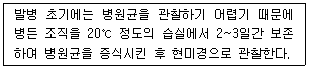
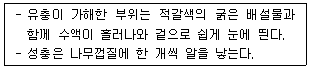
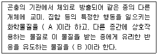
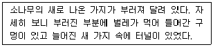
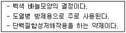

식물보호산업기사 (2018-09-15 기출문제)
1과목: 식물병리학
1. 배추 무름병균의 특성은?
- 주모가 있는 그램양성세균이다.
- 주모가 없는 그램음성세균이다.
- 주모가 없는 그램양성세균이다.
- 주모가 있는 그램음성세균이다.
(정답률: 75%)

2. 오이 덩굴쪼김병에 대한 설명으로 옳은 것은?
- 산성 토양에서는 잘 발생하지 않는다.
- 주로 18℃ 이하의 온도에서 잘 발생한다.
- 종자 전염보다는 주로 매개충에 의해 전염된다.
- 토마토 시들음병균과 동일한 진균류에 의한 병
(정답률: 65%)
3. Millardet에 의해 개발된 보르도액에 대한 설명으로 옳은 것은?
- 항생제이다.
- 보호 살균제이다.
- 생물 농약의 하나이다.
- 벼 도열병 방제를 위해 개발되었다.
(정답률: 91%)
4. 수목병의 표징이 아닌 것은?
- 소나무 피목에 농황색의 돌기 형성
- 오동나무에 다수 발생한 작은 가지
- 잣나무 줄기에 나타난 황색의 주머니
- 일본잎갈나무 부후목 뿌리 부위에 발생한 버섯
(정답률: 79%)
5. 담자균에 속하는 식물병은?
- 가지 풋마름병
- 사과나무 부란병
- 배나무 붉은별무늬병
- 복숭아나무 잎오갈병
(정답률: 66%)
6. 병원균의 중간기주를 제거함으로써 방제할 수 있는 병은?
- 고추 역병
- 오이 노균병
- 밀 줄기녹병
- 보리 깜부기병
(정답률: 74%)
7. 벼 도열병균이 주로 월동하는 곳은?
- 토양
- 중간기주
- 매개충의 알
- 볍씨의 병든 부분
(정답률: 77%)
8. 배추 무사마귀병에 대한 설명으로 옳지 않은 것은?
- 알칼리성 토양에서 주로 발생한다.
- 수분이 많은 토양에서 많이 발생한다.
- 순활물기생균으로 인공배양이 되지 않는다.
- 뿌리의 세포가 비정상적으로 커지고 혹이 만들어진다.
(정답률: 77%)
9. 저항성이었던 품종이 같은 병원균에 의하여 이병화되는 주요 원인으로 옳은 것은?
- 지구 온난화
- 품종 자체의 퇴화
- 농약 살포의 소홀
- 병원균의 새로운 변이주 출현
(정답률: 91%)
10. 매개충으로 인하여 전염되는 병은?
- 벼 오갈병
- 보리 흰가루병
- 사과나무 부란병
- 배나무 붉은별무늬병
(정답률: 79%)
11. 대추나무 재배에서 가장 큰 문제가 되는 병해이며 항생제의 수간주입에 의하여 방제가 가능한 것은?
- 역병
- 노균병
- 탄저병
- 빗자루병
(정답률: 90%)
12. 주로 포자로 번식하며 식물병을 일으키는 것은?
- 세균
- 선충
- 곰팡이
- 바이러스
(정답률: 88%)
13. 소나무 잎떨림병 방제를 위한 약제 살포 시기로 가장 적합한 것은?
- 1월~2월
- 3월~5월
- 6월~8월
- 9월~11월
(정답률: 78%)
14. 감자 역병에 대한 설명으로 옳은 것은?
- 빗물에 의해 화기전염 한다.
- 병원균은 기공 또는 각피 침입한다.
- 고온이고 건조한 환경에서 잘 발생한다.
- 괴경지표법으로 선발된 건전한 씨감자를 재배하여 방제할 수 있다.
(정답률: 61%)
15. 벼 키다리병 방제에 가장 효과적인 방법은?
- 종자 소독
- 조식 재배
- 약제 엽면 살포
- 질소 비료 시용
(정답률: 84%)
16. 세균에 의하여 발생하는 식물병의 주요 증상으로만 나열된 것은?
- 혹, 노란 가루
- 빗자루, 모자이크
- 시들음, 가지마름
- 갈색병반, 검은 돌기
(정답률: 85%)
17. 식물병의 원인을 파악하기 위해 다음과 같이 처리할 때 병원 진단에 가장 용이한 것은?

- 균류에 의한 병
- 세균의 의한 병
- 바이러스에 의한 병
- 파이토플라스마에 의한 병
(정답률: 78%)
18. 병원균이 땅속에서 월동하고 토양에서 병이 전반되는 것은?
- 콩 모잘록병
- 오이 흰가루병
- 보리 겉깜부기병
- 배나무 붉은별무늬병
(정답률: 71%)
19. 식물에 병을 일으키는 세균 속이 아닌 것은?
- Erwinia
- Helicobacter
- Pseudomonas
- Agrobacterium
(정답률: 78%)
20. 담배 들불병을 유발하는 병원체는?
- 선충
- 세균
- 곰팡이
- 바이러스
(정답률: 58%)
2과목: 농림해충학
21. 다음 설명에 해당하는 해충은?

- 솔잎혹파리
- 벼룩잎벌레
- 향나무하늘소
- 복숭아유리나방
(정답률: 63%)
22. 대체로 우리나라에서 월동하지 못하는 해충은?
- 벼멸구
- 애멸구
- 끝동매미충
- 벼물바구미
(정답률: 81%)
23. 곤충의 형태적 특징으로 옳지 않은 것은?
- 다리가 3쌍이다.
- 눈은 겹눈만 있고 홑눈이 없다.
- 대게 2쌍의 날개가 있고 탈바꿈을 하기로 한다.
- 몸이 머리, 가슴, 배의 3부분으로 나누어져 있다.
(정답률: 87%)
24. 다음 설명에서 A, B에 해당하는 용어는?

- A : 호르몬, B : 호르몬
- A : 페로몬, B : 알로몬
- A : 알로몬, B : 카이로몬
- A : 페로몬, B : 카이로몬
(정답률: 79%)
25. 뿌리혹선충 방제 방법으로 옳지 않은 것은?
- 상토를 소독한다.
- 토양의 pH가 높아지지 않도록 관리를 한다.
- 경작지가 논일 경우 3년마다 한 번씩 벼를 재배한다.
- 토양의 유기물 함량이 낮아지지 않도록 비배관리를 한다.
(정답률: 60%)
26. 아메리카잎굴파리에 대한 설명으로 옳지 않은 것은?
- 약제 저항성이 늦게 발달하는 해충이다.
- 거베라, 국화, 토마토, 수박 등에 피해를 준다.
- 유충은 잎조직 속에서 굴을 파고 다니면서 섭식한다.
- 성충이 기주식물의 잎에 작은 구멍을 내고 산란한다.
(정답률: 61%)
27. 불완전변태에 대한 설명으로 옳은 것은?
- 대부분 번데기 과정이 없다.
- 수서곤충은 해당되지 않는다.
- 풀잠자리가 대표적인 곤충이다.
- 어른벌레의 모양이 애벌레와 매우 달라진다.
(정답률: 79%)
28. 곤충의 순환계에 대한 설명으로 옳지 않은 것은?
- 심장에는 심문이 있다.
- 등쪽에 대동맥이 있다.
- 패쇄형 순환계를 가지고 있다.
- 혈액은 혈장세포와 혈구세포 등으로 이루어진다.
(정답률: 76%)
29. 가해하는 기주의 종류가 가장 적은 해충은?
- 차응애
- 파밤나방
- 배추좀나방
- 미국흰불나방
(정답률: 60%)
30. 해충의 생물적 방제 방법의 장점이 아닌 것은?
- 속효적이며 일시적이나 효과가 크다.
- 일단 정착되면 영구적이어서 경제적이다.
- 생물상이 평형을 되찾고 생태계가 안정된다.
- 독성이 거의 없고 환경에 대한 부작용이 적다.
(정답률: 78%)
31. 단위생식을 하지 않는 곤충은?
- 사과면충
- 파굴파리
- 밤나무혹벌
- 복숭아혹진딧물
(정답률: 57%)
32. 곤충의 다리 배열 순서로 옳은 것은?
- 가슴 – 밑마디 – 도래마디 – 종아리마디 – 넓적다리마디 – 발마디
- 가슴 – 밑마디 – 넓적다리마디 – 도래마디 – 종아리마디 - 발마디
- 가슴 – 밑마디 – 도래마디 – 넓적다리마디 – 종아리마디 - 발마디
- 가슴 – 밑마디 – 넓적다리마디 – 종아리마디 – 도래마디 – 발마디
(정답률: 76%)
33. 탈피 과정에서 다시 흡수되어 재활용되는 체벽의 부분은?
- 외표피
- 기저막
- 외원표피
- 내원표피
(정답률: 79%)
34. 딱정벌레목에 속하지 않는 것은?
- 소나무좀
- 오리나무잎벌레
- 버즘나무방패벌레
- 느티나무벼룩바구미
(정답률: 57%)
35. 이화명나방이 월동하는 형태는?
- 알
- 성충
- 유충
- 번데기
(정답률: 68%)
36. 성충은 식물조직에 산란하고 부화한 애벌레는 2령을 경과한 후 땅속에서 번데기 기간을 거쳐 성충이 되는 것은?
- 애멸구
- 온실가루이
- 점박이응애
- 꽃노랑총채벌레
(정답률: 63%)
37. 충영을 만드는 해충은?
- 밤바구미
- 밤나무혹벌
- 오리나무잎벌레
- 털두꺼비하늘소
(정답률: 71%)
38. 분류학적으로 곤충강에 속하지 않는 것은?
- 응애류
- 진딧물류
- 잎벌레류
- 깍지벌레류
(정답률: 84%)
39. 다음 피해의 설명에 해당하는 해충은?

- 솔나방
- 소나무좀
- 솔잎혹파리
- 솔껍질깍지벌레
(정답률: 72%)
40. 진딧물류 방제에 가장 효과적인 곤충은?
- 굴파리좀벌
- 애꽃노린재
- 오이이리응애
- 칠성풀잠자리
(정답률: 66%)
3과목: 농약학
41. 화본과 및 광엽잡초의 경엽과 뿌리를 통하여 동시에 흡수 이행되어 살초작용을 나타내는 이미다졸리논계 제초제는?
- 벤타존액제
- 이마자퀸액제
- 세톡시딤유제
- 이마조설퓨론수화제
(정답률: 57%)
42. 다음 중 살충제 농약으로 분류되는 것은?
- 벤타존
- 티오파네이트메틸
- 트리사이클라졸제
- 페노뷰카브제(BPMC)
(정답률: 52%)
43. 농약의 혼용 시 주의해야 할 사항으로 가장 거리가 먼 것은?
- 혼용이 가능한 농약은 적용 작물에 관계없이 사용한다.
- 여러 가지 농약을 혼용할 경우 과량 살포하지 않는다.
- 가능하면 다종혼용은 2약제를 혼용한다.
- 혼합 조제한 농약은 오래 두지 말고 되도록 빨리 사용한다.
(정답률: 84%)
44. 농약관리법에서 어독성 Ⅱ급을 구분하는 기준은? (단, 반수를 죽일 수 있는 농도(mg/L, 48시간) 기준이다.)
- 0.5 ~ 1.0
- 0.5 ~ 2.0
- 1.0 ~ 2.0
- 1.0 ~ 2.5
(정답률: 69%)
45. 항생제 농약이 아닌 것은?
- Polyoxins
- Kasugamycin
- Streptomycin
- Alpha-cypermethrin
(정답률: 63%)
46. 농약의 안전사용기준은 누가 정하는가?
- 농약회사
- 농촌진흥청장
- 농림축산식품부장관
- 식품의약품안전처장
(정답률: 73%)
47. 다음에서 설명하는 살균제는?

- 티람(Thiram)
- 글로로타로닐(Chlorothalonil)
- 가수가마이신(Kasugamycin)
- 메틸브로마이드(Methyl bromide)
(정답률: 63%)
48. 농약관리법에서 사용되는 용어의 정의 중 틀린 것은?
- 농약의 범주에는 농림축산식품부령이 정하는 기피제, 유인제 등도 포함된다.
- 농약이란 농작물의 생리기능을 증진하거나 억제하는데 사용하는 약제를 포함한다.
- 원제란 농약의 유효성분이 농축되어 있는 물질을 말한다.
- 농작물이란 수목 및 임산물을 제외한 모든 농산물을 말한다.
(정답률: 77%)
49. 각종 작물에 적용할 수 있고 응애의 모든 생육단계에 걸쳐 효과가 있는 살응애제는?
- 페노뷰카브
- 다이아지논
- 테부페피라드
- 펜토에이트
(정답률: 38%)
50. 농약의 사용방법과 관련하여 일어나는 약해가 아닌 것은?
- 근접살포에 의한 약해
- 동시사용으로 인한 약해
- 불순물 혼합에 의한 약해
- 섞어쓰기 때문에 일어나는 약해
(정답률: 66%)
51. 피에이엠(PAM)은 주로 어느 농약의 중독치료제로 사용되는가?
- 수은제
- 유기인제
- 동제
- 비소제
(정답률: 77%)
52. 제초제의 처리방법에 따른 분류에 해당되는 것은?
- 토양처리제와 경엽처리제
- 이행형제초제와 접촉형제초제
- 선택성제초제와 비선택성제초제
- 호르몬제초제와 비호르몬제초제
(정답률: 66%)
53. 농약의 제제형태에 따라 분류한 것은?
- 유제 농약
- 유기인제 농약
- 살균제 농약
- 어독성 농약
(정답률: 63%)
54. 과실의 착색촉진, 숙기촉진의 역할을 하는 에세폰(39%) 액제는 어느 성분의 계열에 속하는가?
- 옥신(Auxin)
- 에틸렌(Ethylene)
- 지베렐린(Gibberellin)
- 사이토키닌(Cytoknin)
(정답률: 79%)
55. 약알칼리성 광물로서 안정하고 토분성이 우수하여 유기합성 농약의 분제 제제용으로 널리 사용되는 증량제는?
- 탈크
- 벤토나이트
- 필로필라이트
- 카올린
(정답률: 65%)
56. 다음 중 농약의 구비조건이 아닌 것은?
- 약해가 없어야 한다.
- 가격이 저렴해야 한다.
- 인축 독성이 강해야 한다.
- 다른 약제와 혼용이 가능해야 한다.
(정답률: 84%)
57. 과수원의 잡초방제에 가장 적당한 제초제는?
- 캡탄
- 티오파네트메틸
- 티아다닐디노테퓨란
- 글리포세이트이소프로필아민
(정답률: 62%)
58. 유기인계 및 카바메이트계 살충제가 해충에 작용하여 살충작용을 일으키는 주된 기작은?
- 피부중독
- 원형질 파괴
- 근육중독
- 신경저해
(정답률: 81%)
59. 수질 내 화합물의 농도가 2ppm이고, 송사리 내의 농도가 20ppm일 때 이 화합물의 생물농축계수(BCF)는?
- 2
- 10
- 20
- 40
(정답률: 75%)
60. 제초제, 목재의 방부제, 낙엽촉진제 등으로 광범위하게 사용되는 약제는?
- PCP제
- 카르복신제
- EBP제
- 트리아진제
(정답률: 62%)
4과목: 잡초방제학
61. 잡초 방제를 위한 조치로 가장 효과가 없는 것은?
- 경운
- 돌려짓기
- 흙태우기
- 이어짓기
(정답률: 77%)
62. 주로 지하경에 의해서 번식하는 잡초는?
- 벗풀
- 강피
- 바랭이
- 물달개비
(정답률: 57%)
63. 재배방법에 따른 경합에 대한 설명으로 옳은 것은?
- 직파재배는 이앙재배보다 잡초에 대한 경합에 불리하다.
- 지표면을 먼저 점유한 작물은 후에 발생한 잡초보다 경합에 불리하다.
- 작물의 재식밀도가 높으면 높을수록 잡초에 대한 작물의 경합력이 낮아진다.
- 과수원이나 나지상태의 포장에 피복작물을 재배하면 잡초에 대한 경합력이 낮아진다.
(정답률: 71%)
64. 제초제의 선택성 발현에 관여하는 요인으로 가장 거리가 먼 것은?
- 잎의 표면 조직
- 뿌리의 분포 상태
- 잎의 엽록소 함량
- 생장점의 노출 여부
(정답률: 67%)
65. 잡초의 장점으로 옳지 않은 것은?
- 토양 침식 방지
- 토양 산성화 방지
- 사료 작물로 이용
- 육종 소재로 이용
(정답률: 62%)
66. 제초제가 작물에 약해를 유발시키는 원인으로 가장 영향력이 큰 것은?
- 습도
- 광선
- 강우
- 온도
(정답률: 59%)
67. 주로 논에서 자라는 잡초가 아닌 것은?
- 좀바랭이
- 사마귀풀
- 물달개비
- 나도겨풀
(정답률: 54%)
68. 잡초에 의한 작물의 피해가 가장 심한 경우는?
- 벼 재배지에 발생한 가막사리
- C3 작물 재배지에 발생한 C4 잡초
- 화본과 작물 재배지에 발생한 광엽 잡초
- 광엽 작물 재배지에 발생한 화본과 잡초
(정답률: 84%)
69. 예방적 방제방법에 해당하는 것은?
- 관배수 조절
- 작물 종자 정선
- 식물병원균 이용
- 호미를 이용한 잡초 제거
(정답률: 66%)
70. 겨울작물 밭에서 우점하는 잡초는?
- 깨풀
- 메꽃
- 뚝새풀
- 쇠비름
(정답률: 56%)
71. 주로 잔디밭에 많이 발생하는 잡초는?
- 여뀌, 강아지풀
- 토끼풀, 꽃다지
- 개비름, 한련초
- 민들레, 명아주
(정답률: 73%)
72. 벼의 유효분얼이 끝나고 유수형성기 이전에 살포하는 경엽처리형 제초제는?
- 이사-디 액제
- 옥사디아존 유제
- 뷰타클로르 유제
- 글리포세이트토타슘 액제
(정답률: 68%)
73. 제초제의 물리적 소실이 아닌 것은?
- 토양 입자에 흡착
- 대기 중으로 휘발
- 토양 하층으로 용탈
- 토양 미생물의 분해
(정답률: 66%)
74. 논에 다년생 잡초가 증가한 주요 이유는?
- 논 이모작 재배
- 퇴비 사용량 감소
- 계속적인 화학비료 사용
- 일년생 잡초 방제용 제초제 연용
(정답률: 75%)
75. 잡초 종자의 발아에 영향을 미치는 환경적 요인으로 가장 거리가 먼 것은?
- 광
- 온도
- 수분
- 이산화탄소
(정답률: 82%)
76. 잡초의 생육특성에 대한 설명으로 옳지 않은 것은?
- 바랭이, 여뀌는 건조에 대한 내성이 크다.
- 잡초 종자가 무거울수록 출아심도가 깊다.
- 향부자, 별꽃은 토양의 산소 농도가 낮아도 잘 발생한다.
- 갈퀴덩굴, 뚝새풀은 주로 비옥한 땅에서 발생하는 습성이 있다.
(정답률: 55%)
77. 생물학적 방제방법에 대한 설명으로 옳지 않은 것은?
- 비교적 영속성이 있다.
- 주변 환경 피해가 적다.
- 화학적 방제에 비해 살초 작용이 빠르다.
- 적절한 생물을 찾아내기만 하면 적용 비용이 적게 든다.
(정답률: 80%)
78. 잡초 방제의 경제성 분석 방법으로 다양한 잡초 발생밀도에서 농작물의 소득을 분석하는 것은?
- 한계점 분석법
- 보상력 분석법
- 부분예산 분석법
- 기계·동력예산 분석법
(정답률: 57%)
79. 잡초에 대한 작물의 경합력 증진을 위해 가장 적절한 조치는?
- 명아주에 대한 경합력 증진을 위하여 단간종 보리를 심는다.
- 강아지풀에 대한 경합력 증진을 위하여 만생종 옥수수를 심는다.
- 깨풀에 대한 경합력 증진을 위해 분지수가 많은 콩 품종을 심는다.
- 알방동사니에 대한 경합력 증진을 위하여 벼의 재식 밀도를 반으로 줄인다.
(정답률: 65%)
80. 다년생 잡초에 해당하는 것은?
- 가래
- 왕바랭이
- 알방동사니
- 중대가리풀
(정답률: 66%)